Chapter 6 Week 6
Practice.Rmd here or on Learn. We’ll use the same data as last week (you can download it again from here or Learn).
6.1 Plotting Functions and Simple Data Transformation
The key reading that you may find useful for this week:
Chapter 5 on Data Transformation - R for Data Science by Garett Grolemund and Hadley Wikham
6.2 Load all the necessary packages
6.3 Part 1: Hand plotting functions
This week we will be focusing on learning more about various functions and the nature of the data you may be dealing with as a psychology researcher. We will also introduce some hand calculations so make sure you have some paper and a pencil with you to practice these. The main aim is to build intution about functions and learn how these can be applied to the data.
6.4 Basics
You have seen by now how to plot your data. Thanks to mathematics, each of the plots we presented to you earlier can be described mathematically by formulating the functions that describe the data best. This section will provide a foundation for understanding functions that can be used to describe relationships in your data.
6.5 Linear functions

6.5.1 Tree height example
You will find that in statistics most analytical approaches are based on the assumption that a proccess in your data can be described using linear functions.
The most common form would be : \[y=a+bx\]
Please note that you always have two axes (x and y). Your \(x\) will always represent an independent process and \(y\) will represent the response in some variable due to change in the independent process. In the equation above \(a\) and \(b\) are constans. This may sound really complicated so here is an example.
As the time passes, the tree height is increasing. Here Time will be our \(x\) - an independent variable and (Tree height) will be a dependent variable. In other words, Tree height will be our \(y\) - it depends on x (Time).
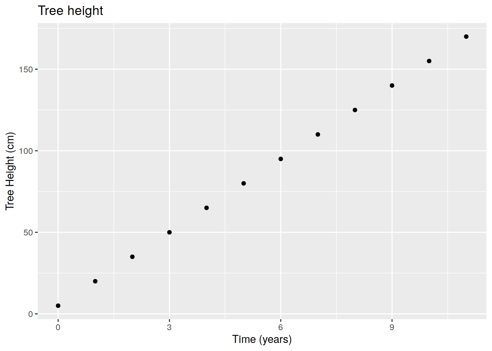
ggplot(data = tree, aes(x = x, y = y)) +
geom_line(color = 'blue') +
geom_point() +
xlab("Time (years)") +
ylab("Tree Height (cm)") +
ggtitle("Tree height")
Note that the height is affected by Time but Time is not affected by Tree Height. Hence the relationship. Your choice of what goes where in your graph depends largely on the assumption about the process you are studying.
If we were to fit a model to this data the function we would use is:
\[y=a+bx\]
Tree height (y): \[y = 5+15x\]
Note that 5 is where we start our line or in other words the value of \(y\) when \(x\) is zero, and 15 is the slope of the line.
Interpretation: The tree will grow in height by about 15 cm each year.
6.5.2 Non-linear functions (first order polynomials)
Of course there are cases where the change in \(y\) will not always be the same for every unit change of \(x\). Such can also be described as non-constant change in y as a function of x. For those cases, polynomials are very helpful. Consider the case below:
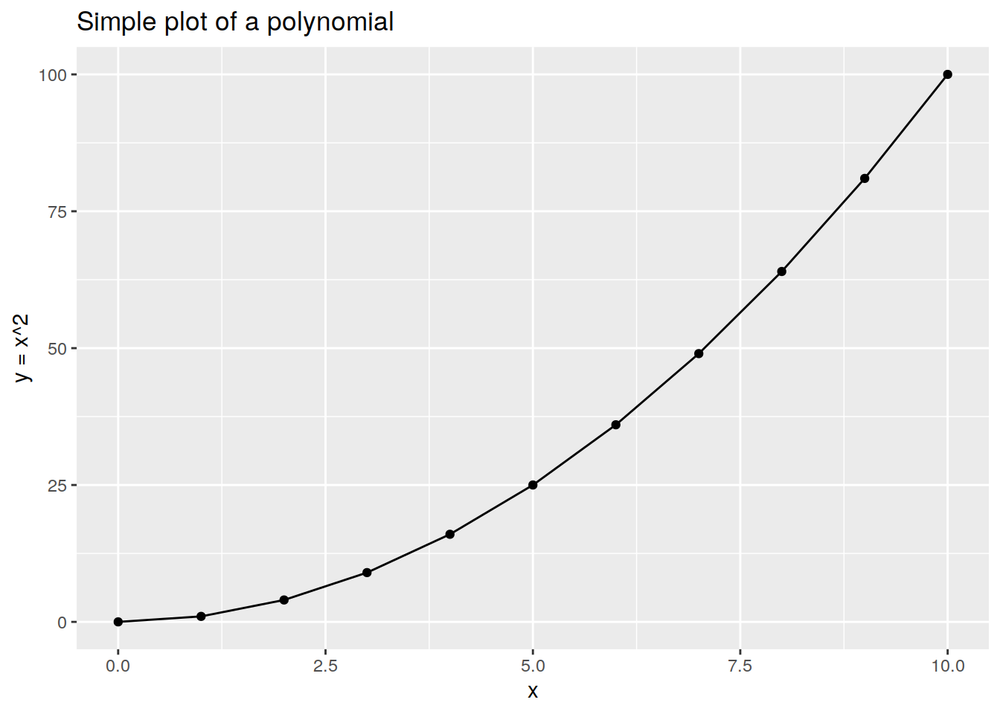
If we have a sequence of \(x\) represented by: \[x=\begin{bmatrix} 0 \\ 1 \\ 2 \\ 3 \\ 4 \\ 5\\ 6 \\ 7 \\ 8\\ 9\\ 10\\ \end{bmatrix} \]
Then for: \[f(x)=x^2\] We will have a corresponding \(f(x)=y\):
\[f(x)=y=\begin{bmatrix} 0 \\ 1 \\ 4 \\ 9 \\ 16 \\ 25\\ 36 \\ 49 \\ 64\\ 81\\ 100\\ \end{bmatrix} \]
Can you see how it works? Try now by yourself.
6.6 Practice plotting
To play a bit with various functions and plotting, consider using both R and a piece of paper and a pencil.
Imagine that you have following values for \(x\):
\[x=\begin{bmatrix} 2 \\ 4 \\ 5 \\ 8 \\ 12 \\ 16\\ 18 \\ 22 \\ \end{bmatrix} \]
We are keen to provide visualisations for various functions of x that can be expressed via \(f(x) = y\)
To plot the following function \[y=x\] we can frist create a mini data that will have our \(x\) and the function we want to apply to the vector of \(x\).
# Assign x and y
data_1 <- tibble(x = c(2,4,5,8,12,16,18,22),
y = x)
# Plot
ggplot(data = data_1, aes(x = x, y = y)) +
geom_point() +
geom_line() +
xlab("x") +
ylab("y = x") +
ggtitle("Plot of y = x")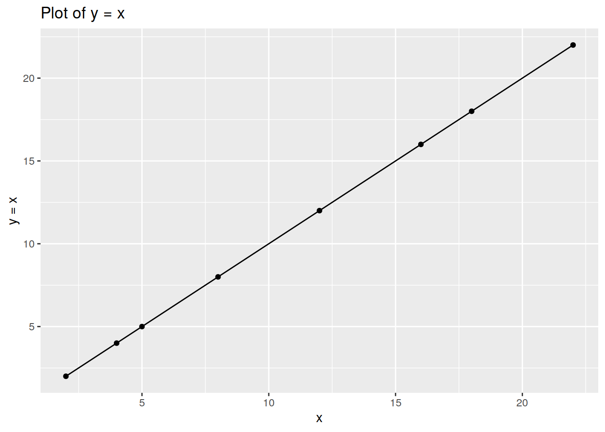
Note the response in \(y\) for each value of \(x\). You can check the result in R too by running data.
## # A tibble: 8 x 2
## x y
## <dbl> <dbl>
## 1 2 2
## 2 4 4
## 3 5 5
## 4 8 8
## 5 12 12
## 6 16 16
## 7 18 18
## 8 22 22Now try with: \[y=x-3x\]
# Assign x and y
data_2 <- tibble(x = c(2,4,5,8,12,16,18,22),
y = x-3*x)
# Plot
ggplot(data = data_2, aes(x = x, y = y)) +
geom_point() +
geom_line() +
xlab("x") +
ylab("y = x - 3x") +
ggtitle("Plot of y = x - 3x")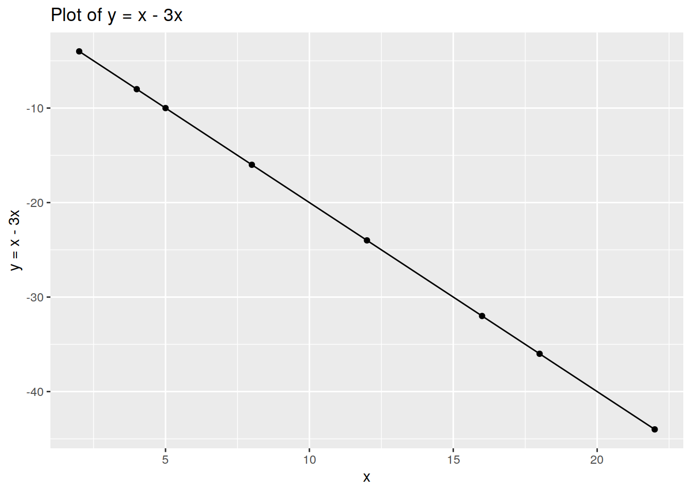
## # A tibble: 8 x 2
## x y
## <dbl> <dbl>
## 1 2 -4
## 2 4 -8
## 3 5 -10
## 4 8 -16
## 5 12 -24
## 6 16 -32
## 7 18 -36
## 8 22 -44Now try with: \[y=(x+3)^2\]
# Assign x and y
data_3 <- tibble(x = c(2,4,5,8,12,16,18,22),
y = (x + 3)^2)
# Plot
ggplot(data = data_3, aes(x = x, y = y)) +
geom_point() +
geom_line() +
xlab("x") +
ylab("y = (x + 3)^2") +
ggtitle("Plot of y = (x + 3)^2")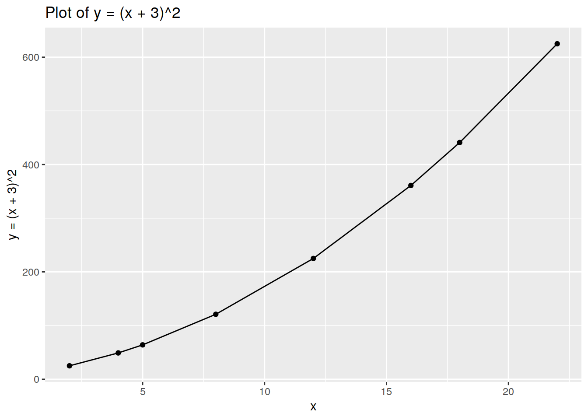
## # A tibble: 8 x 2
## x y
## <dbl> <dbl>
## 1 2 25
## 2 4 49
## 3 5 64
## 4 8 121
## 5 12 225
## 6 16 361
## 7 18 441
## 8 22 625Finally, try with: \[y=log(x)\]
# Assign x and y
data_4<- tibble(x = c(2,4,5,8,12,16,18,22),
y = log(x))
# Plot
ggplot(data = data_4, aes(x = x, y = y)) +
geom_point() +
geom_line() +
xlab("x") +
ylab("y = log(x)") +
ggtitle("Plot of y = log(x)")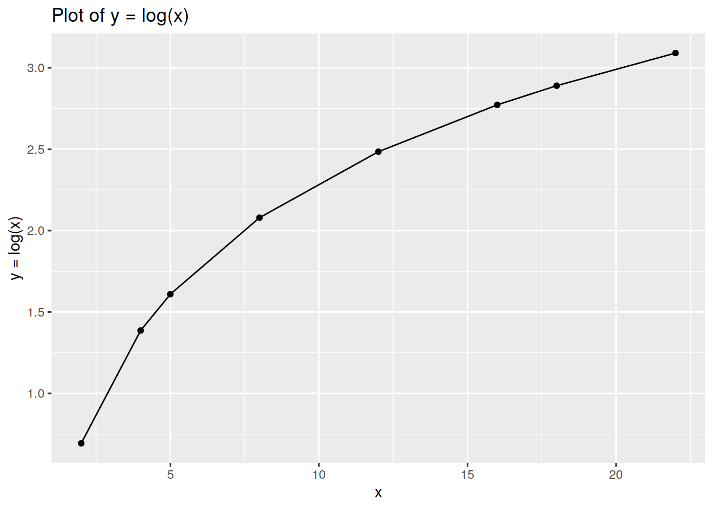
## # A tibble: 8 x 2
## x y
## <dbl> <dbl>
## 1 2 0.693
## 2 4 1.39
## 3 5 1.61
## 4 8 2.08
## 5 12 2.48
## 6 16 2.77
## 7 18 2.89
## 8 22 3.096.7 Part 2: Introduction to Data Transformation
This week we will walk you through examples of various data transformations you can do using tidyverse. When working with real data you often may be interested to apply various transformations to your variable to change or/and adjust the scale of your data or for many other purposes. We will use the datasets from Week 5 and will focus on understanding mutate() function. We will further discuss how variable transformations can address the skewness in your variable distributions - if this may seem a bit confusing at this stage, bear with us - we will get back to it soon enough.
Let’s start by loading tidyverse.
And the data from last week - edinburgh_delays.
Whilst we are here let us provide a quick data decscription:
# Quick description
edinburgh_delays %>%
group_by(day) %>%
summarise(mean = mean(delay_time),
median = median(delay_time),
sd = sd(delay_time))## # A tibble: 2 x 4
## day mean median sd
## <fct> <dbl> <dbl> <dbl>
## 1 average day 15.3 15.5 3.85
## 2 christmas eve 40.2 26 37.4From last week remember that Christmas Eve delay times were slighly skewed as we had some very extreme delays which have affected the shape of our histogram.
# Visualise the data using a histogram by day (average day)
ggplot(data = subset(edinburgh_delays, day %in% c("average day")), aes(x = delay_time)) +
geom_histogram(color ='grey', fill ='cornsilk') +
geom_vline(aes(xintercept = mean(delay_time)), color = 'red', size = 2) +
geom_vline(aes(xintercept = median(delay_time)), color = 'blue', size = 2) +
labs(x = 'Delay time (min)', y = 'Frequency', title = 'Delays at Edinburgh Airport (Average Day)') +
theme_minimal()## `stat_bin()` using `bins = 30`. Pick better value with `binwidth`.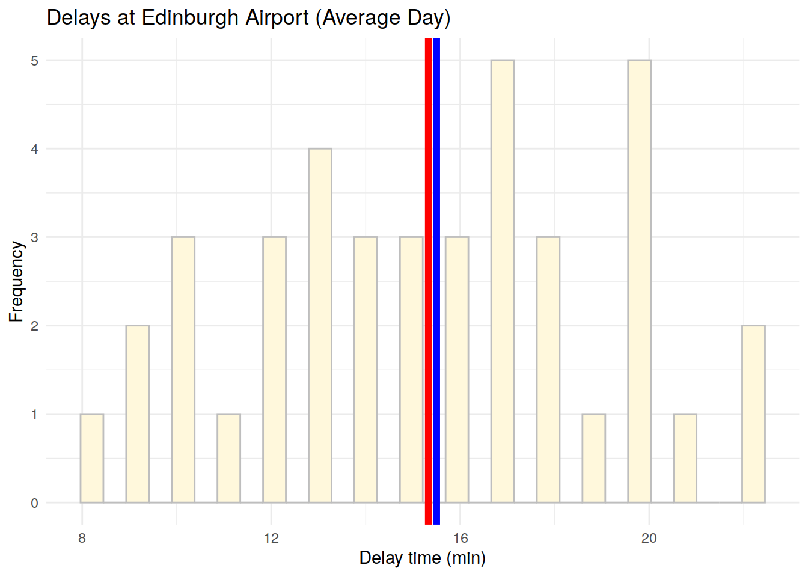
And for Christmas Eve too:
# Visualise the data using a histogram by day (christmas eve)
ggplot(data = subset(edinburgh_delays, day %in% c("christmas eve")), aes(x = delay_time)) +
geom_histogram(color ='grey', fill ='cornsilk') +
geom_vline(aes(xintercept = mean(delay_time)), color = 'red', size = 2) +
geom_vline(aes(xintercept = median(delay_time)), color = 'blue', size = 2) +
labs(x = 'Delay time (min)', y = 'Frequency', title = 'Delays at Edinburgh Airport (Christmas Eve)') +
theme_minimal()## `stat_bin()` using `bins = 30`. Pick better value with `binwidth`.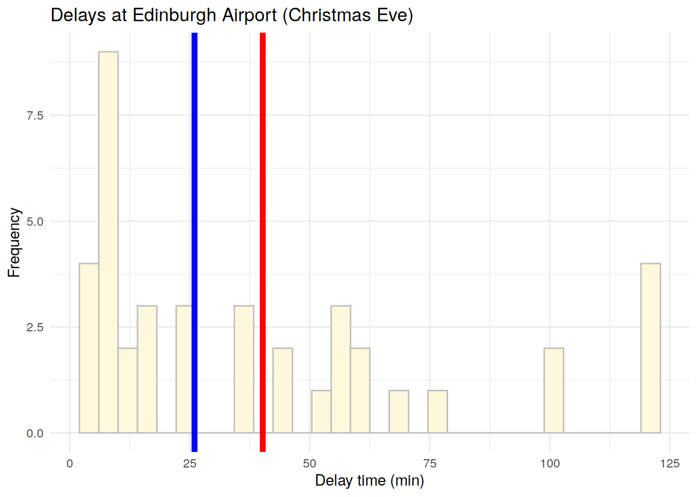
6.8 Renaming
Now we not only want to specify that delay time is measured in minutes but we also want to add an extra variable that will provide us with an idea of the delay time in hours.
6.9 Adding new variables
6.10 Transformation and skewness
Now, look back at your histograms for both Christmas Eve and Average Day. Whilst the shape of the Average Day distribution may look quite symmetrical, we may want to address the skewness in the Christmas Eve shape. There are two common ways to do this: taking the log() of the variable or taking the sqrt(). Let us see what these will do in action:
# Visualise the data using a histogram by day (Christmas Eve) now with log transformation
ggplot(data = subset(edinburgh_delays, day %in% c("christmas eve")), aes(x = log_time)) +
geom_histogram(color = 'grey', fill = 'lightblue') +
geom_vline(aes(xintercept = mean(log_time)), color ='red', size = 2) +
geom_vline(aes(xintercept = median(log_time)), color ='blue', size = 2) +
labs(x = 'Delay time (log(min))',y = 'Frequency', title = 'Log of Delays at Edinburgh Airport (Christmas Eve)') +
theme_minimal()## `stat_bin()` using `bins = 30`. Pick better value with `binwidth`.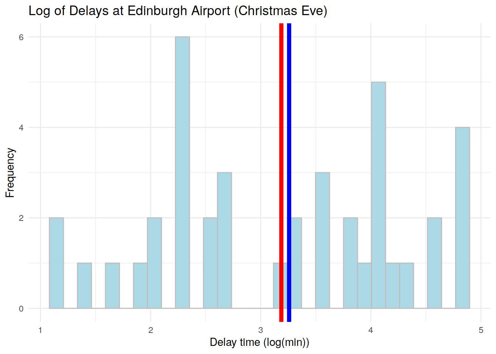
# Visualise the data using a histogram by day (Christmas Eve) now with sqrt transformation
ggplot(data = subset(edinburgh_delays, day %in% c("christmas eve")), aes(x = sqrt_time)) +
geom_histogram(color = 'grey', fill = 'lightblue') +
geom_vline(aes(xintercept = mean(sqrt_time)), color ='red', size = 2) +
geom_vline(aes(xintercept = median(sqrt_time)), color ='blue', size = 2) +
labs(x = 'Delay time (sqrt(min))', y = 'Frequency', title = 'Sqrt of Delays at Edinburgh Airport (Christmas Eve)') +
theme_minimal()## `stat_bin()` using `bins = 30`. Pick better value with `binwidth`.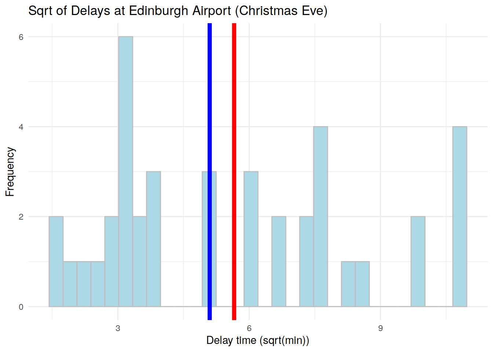
Log is much more effective in dealing with skewness but from these plots it might be hard to tell. Focus on how close the mean and median values are. Let us compare the real values with the log now - we can use a cowplot. Please note how we first assign our plots to objects which we then plot.
# Put side-by-side to compare
library(cowplot)
# Original data plot
plot_original <- ggplot(data = subset(edinburgh_delays, day %in% c("christmas eve")), aes(x = delay_min)) +
geom_histogram(color = 'grey', fill = 'lightblue') +
geom_vline(aes(xintercept = mean(delay_min)), color ='red', size = 2) +
geom_vline(aes(xintercept = median(delay_min)), color ='blue', size = 2) +
labs(x = 'Delay time (min) ', y = 'Frequency', title = 'Delays at Edinburgh Airport (Christmas Eve) ') +
theme_minimal()
# Log transformed plot
plot_log <- ggplot(data = subset(edinburgh_delays, day %in% c("christmas eve")), aes(x = log_time)) +
geom_histogram(color = 'grey', fill = 'lightblue') +
geom_vline(aes(xintercept = mean(log_time)), color ='red', size = 2) +
geom_vline(aes(xintercept = median(log_time)), color ='blue', size = 2) +
labs(x = 'Delay time (log(min))', y = 'Frequency') +
theme_minimal()## `stat_bin()` using `bins = 30`. Pick better value with `binwidth`.
## `stat_bin()` using `bins = 30`. Pick better value with `binwidth`.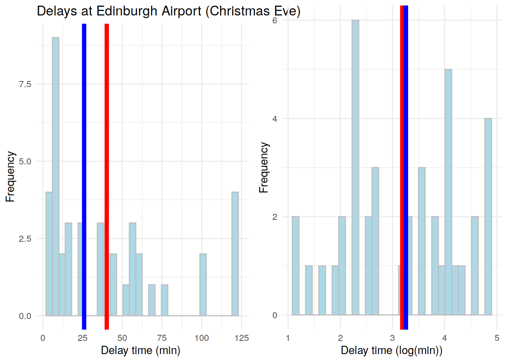
6.11 Mean Centering
Mean centering is one of the most common transformation for a continious variable. To provide transformation in R we can use the following:
# Mean centering
edinburgh_delays <- mutate(edinburgh_delays,
mean_centered_time = delay_min - mean(delay_min))ggplot(data = subset(edinburgh_delays, day %in% c("christmas eve")), aes(x = mean_centered_time)) +
geom_histogram(color = 'grey', fill = 'lightblue') +
geom_vline(aes(xintercept = mean(mean_centered_time)), color ='red', size = 2) +
geom_vline(aes(xintercept = median(mean_centered_time)), color ='blue', size = 2) +
labs(x = 'Delay time - mean centered', y = 'Frequency', title = ' Mean Centered Delays at Edinburgh Airport (Christmas Eve)') +
theme_minimal()## `stat_bin()` using `bins = 30`. Pick better value with `binwidth`.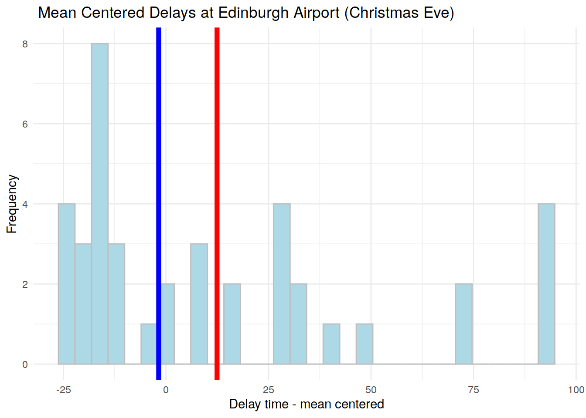
6.12 Standardisation
Lastly, we can also standardise our variables by calculating the distance between each observation and the mean in standard deviation units using scale(), note that the results are very smiliar to mean centering technique.
# Transform using scale()
edinburgh_delays <- mutate(edinburgh_delays,
stand_time = scale(delay_min))ggplot(data = subset(edinburgh_delays, day %in% c("christmas eve")), aes(x = stand_time)) +
geom_histogram(color = 'grey', fill = 'lightblue') +
geom_vline(aes(xintercept = mean(stand_time)), color ='red', size = 2) +
geom_vline(aes(xintercept = median(stand_time)), color ='blue', size = 2) +
labs(x = 'Delay time - standardized', y = 'Frequency', title = ' Standardised Delays at Edinburgh Airport (Christmas Eve)') +
theme_minimal()## `stat_bin()` using `bins = 30`. Pick better value with `binwidth`.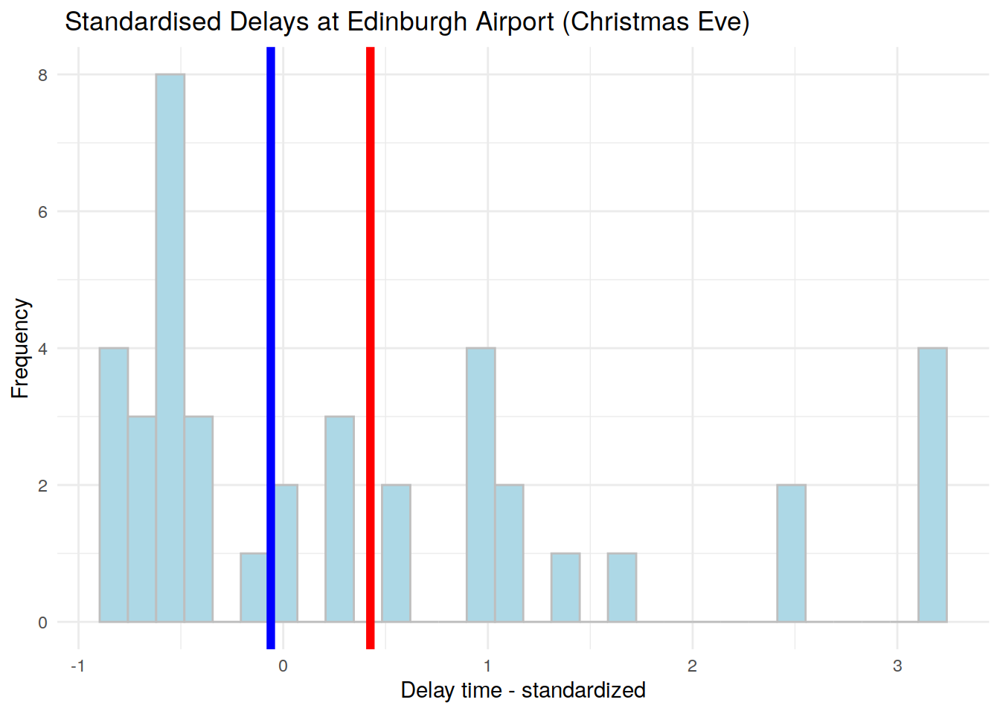
We will talk more about these as we progress through the course - for now, just take a note of the various transformations that you can apply to your numeric variables.
6.13 Practice.Rmd Solutions
For this week practice we want you to work with simple functions and basic data transformations.
Part 1: Work with the vector of \(x\) and apply the following functions.
If we have \(x_1\) represented by: \[x_1=\begin{bmatrix} -10 \\ 1\\ 4 \\ 19 \\ - 6 \\ 0 \\ 14 \\ -8 \\ 0\\ 12\\ 9\\ \end{bmatrix} \]
And \(x_2\) represented by: \[x_2=\begin{bmatrix} -3 \\ 2\\ 1 \\ 0 \\ 1 \\ 2\\ 3 \\ 5 \\ -1\\ -2\\ -3\\ \end{bmatrix} \]
Provide the results for:
- \(y_1=x_1^3\)
- \(y_2=3x_1-5x_1\)
- \(y_3=x_1*x_2\)
Note: you can use mutate() to add an extra variables to represent each of \(y_i\). Have a look at the solutions for the hints.
# Create the data first with x online
my_data <- tibble(x1 = c(-10,1,4,19,-6,0,14,-8,0,12,9),
x2 = c(-3,2,1,0,1,2,3,5,-1,-2,-3))We can use mutate() to add extra variables for \(y\):
## # A tibble: 11 x 5
## x1 x2 y1 y2 y3
## <dbl> <dbl> <dbl> <dbl> <dbl>
## 1 -10 -3 -1000 20 30
## 2 1 2 1 -2 2
## 3 4 1 64 -8 4
## 4 19 0 6859 -38 0
## 5 -6 1 -216 12 -6
## 6 0 2 0 0 0
## 7 14 3 2744 -28 42
## 8 -8 5 -512 16 -40
## 9 0 -1 0 0 0
## 10 12 -2 1728 -24 -24
## 11 9 -3 729 -18 -27Nice!
Part 2: Let’s practice with the income data which we worked with last week.
- Load the data in and work in the template.
- Create an extra variable called income_thousands which will provide information on income in thousands of pounds instead of just pounds.
- Visualise the distribution of income. Do you think we need to transform the income variable? Try one of the transformations you have seen today and visualise your data post-transformation (hint: try with log() and mean centering)
- Load the data in and work in the template. Provide descriptives by region.
# Quick description
income_london %>%
group_by(region) %>%
summarise(mean = mean(income),
median = median(income),
sd = sd(income))## # A tibble: 2 x 4
## region mean median sd
## <fct> <dbl> <dbl> <dbl>
## 1 north 37348. 35766 14937.
## 2 south 33661. 34016. 10719.- Create an extra variable called income_thousands which will provide information on income in thousands of pounds instead of pounds.
# Create variable income_thousands using mutate()
income_london <- mutate(income_london, # Note how we use mutate()
income_thousands = income / 1000) # We want to divide income by 1000- Visualise the distribution of income using thousands. Do you think we need to transform the income variable? Try one of the transformations you have seen today and visualise your data.
# Distribution of income in thousands
ggplot(data = income_london, aes(x = income_thousands)) +
geom_histogram( color = 'grey', fill = 'yellow') +
geom_vline(aes(xintercept = mean(income_thousands)), color = 'red', size = 2) +
geom_vline(aes(xintercept = median(income_thousands)), color = 'blue', size = 2) +
labs(x = "Income (thousands of pounds)", title = "Distribution of London Incomes (thousands of pounds)") ## `stat_bin()` using `bins = 30`. Pick better value with `binwidth`.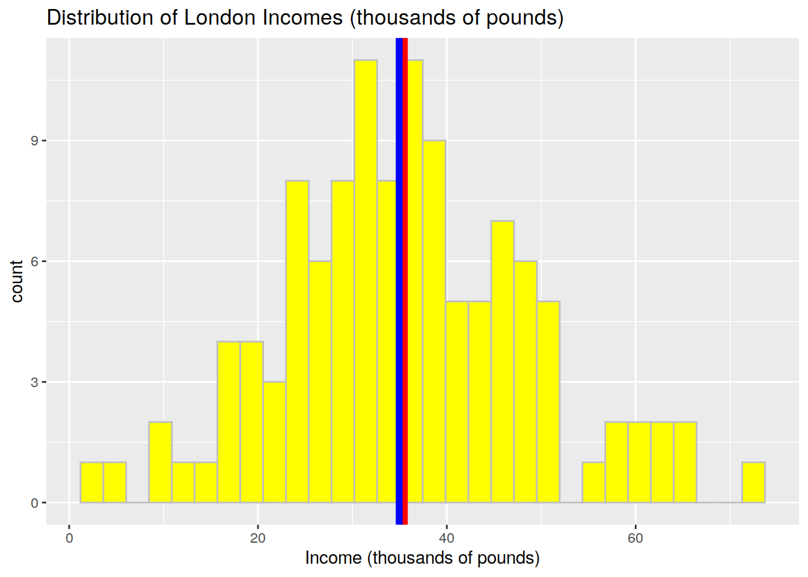
In the context of the distribution, we may find that the shape is pretty symmetrical and our data can be described using the properties of normal distribution.
To make the scale of income more comparative we can still try to transform. Let’s do the log(income).
And quickly visualise:
# Distribution of log(income)
ggplot(data = income_london, aes(x = log_income)) +
geom_histogram( color = 'grey', fill = 'brown') +
geom_vline(aes(xintercept = mean(log_income)), color = 'red', size = 2) +
geom_vline(aes(xintercept = median(log_income)), color = 'blue', size = 2) +
labs(x = "log(Income)", title = "Distribution of Londoners log(Income)") ## `stat_bin()` using `bins = 30`. Pick better value with `binwidth`.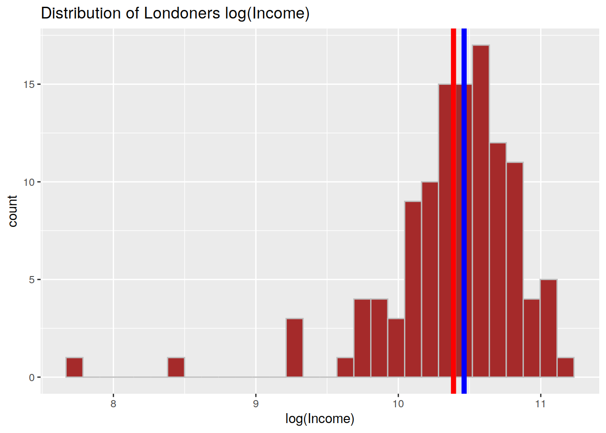
Through rescaling we achieved a reverse - now, our distribution is negatively skewed. Try with the mean centering as well.
And quickly visualise:
# Distribution of mean centered income
ggplot(data = income_london, aes(x = mean_centered_income)) +
geom_histogram( color = 'grey', fill = 'brown') +
geom_vline(aes(xintercept = mean(mean_centered_income)), color = 'red', size = 2) +
geom_vline(aes(xintercept = median(mean_centered_income)), color = 'blue', size = 2) +
labs(x = "Mean Centered Income", title = "Distribution of Londoners Income (Mean Centered)") ## `stat_bin()` using `bins = 30`. Pick better value with `binwidth`.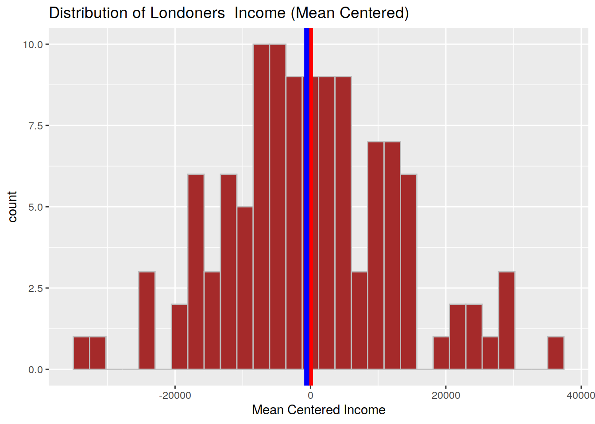
Take a note of the transformation. Why do you think mean centered income here might be a better transformation of the data compared to that of log()?